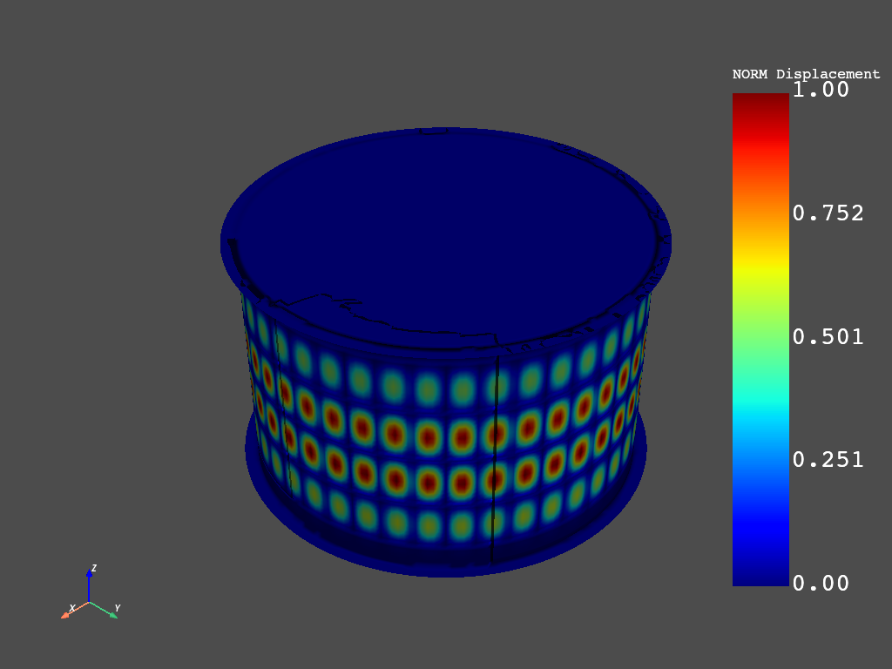
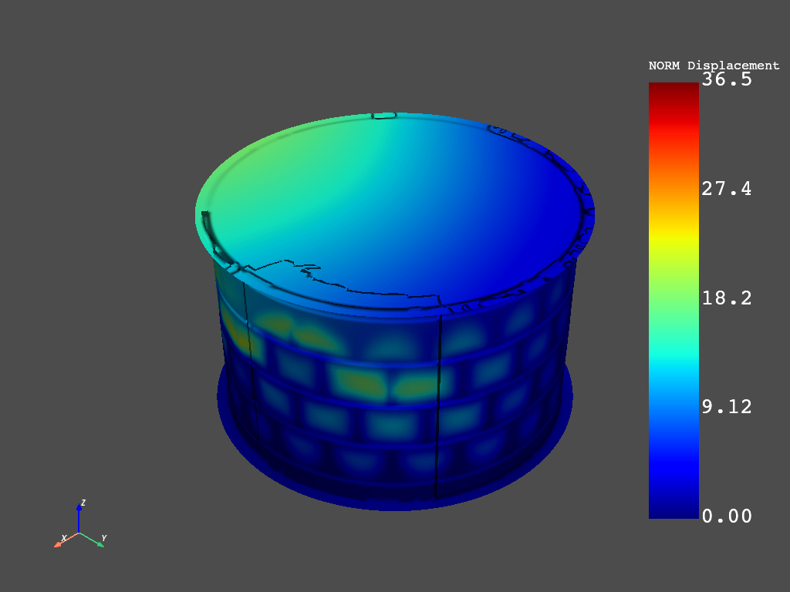

Buckling and post-buckling analysis of a ring-stiffened cylinder using nonlinear stabilization#
This examples shows how to use PyMAPDL to import an existing FE model and to perform a7 nonlinear buckling and post-buckling analysis using nonlinear stabilization. The problem uses a stiffened cylinder subjected to uniform external pressure to show how to find the nonlinear buckling loads, achieve convergence at the post-buckling stage, and interpret the results.
This example is inspired from the model and analysis defined in Chapter 21 of the Mechanical APDL technology showcase manual.
Setting up model#
The original FE model is given in the Ansys Mechanical APDL technology showcase manual. The .cdb contains a FE model of a ring-stiffened cylinder.
A circular cylinder made of bare 2024-T3 aluminum alloy is stiffened inside with five Z-section rings. Its ends are closed with thick aluminum bulkheads. A riveted L section exists between the top plate and the top ring and the bottom plate and bottom ring. The cylinder is subjected to a differential external pressure. The pressure causes a local buckling phenomenon characterized by buckling of the skin between stiffening rings, leading eventually to collapse.
The finite element model of the ring stiffened cylinder is meshed with SHELL281 elements with an element size of 10 mm. The fine mesh is required for buckling analysis, and a full 360-degree model is necessary because the deformation is no longer axisymmetric after buckling occurs.
All shell elements have uniform thickness. Five sections are created in the model with no offsets, so the shell sections are offset to the midplane by default.
Starting MAPDL as a service and importing an external model#
from ansys.mapdl.core import launch_mapdl
from ansys.mapdl.core.examples.downloads import download_tech_demo_data
# define geometric parameters
bs = 95.3 # Ring spacing (mm)
ts = 1.034 # Skin thickness (mm)
tw = 0.843 # Ring thickness (mm)
r = 344 * ts # Radius of cylinder (mm)
L = 431.8 + 2 * (19 - 9.5) # Length of cylinder (mm)
pext = 0.24 # Differential external pressure (MPa)
# Start MAPDL as a service
mapdl = launch_mapdl()
print(mapdl)
mapdl.filname("buckling") # change filename
# mapdl.nerr(nmerr=200, nmabt=10000, abort=-1, ifkey=0, num=0)
# Enter preprocessor
mapdl.prep7()
# define material properties for 2024-T3 Alluminum alloy
EX = 73000 # Young's Modulus (MPA)
ET = 73 # Tangent modulus
mapdl.mp("ex", 1, EX) # Young's Modulus (MPA)
mapdl.mp("prxy", 1, 0.33) # Poisson's ratio
EP = EX * ET / (EX - ET)
mapdl.tb("biso", 1)
mapdl.tbdata(1, 268.9, EP)
# create material plot
mapdl.show("png")
mapdl.tbplot("biso", 1)
mapdl.show("close")
# define shell elements and their sections
mapdl.et(1, 181)
# cylinder
mapdl.sectype(1, "shell")
mapdl.secdata(ts, 1)
# L
mapdl.sectype(2, "shell")
mapdl.secdata(ts + 1.64, 1)
# Z shaped ring stiffener
mapdl.sectype(3, "shell")
mapdl.secdata(tw, 1)
# Plate at z=0 with thickness=25 mm
mapdl.sectype(4, "shell")
mapdl.secdata(25, 1)
# Plate at z=L with thickness=25 mm
mapdl.sectype(5, "shell")
mapdl.secdata(25, 1)
# read model of stiffened cylinder
# download the cdb file
ring_mesh_file = download_tech_demo_data(
"td-21", "ring_stiffened_cylinder_mesh_file.cdb"
)
# read in cdb
mapdl.cdread("db", ring_mesh_file)
mapdl.allsel()
mapdl.eplot(background="w")
mapdl.cmsel("all")
Product: Ansys Mechanical Enterprise
MAPDL Version: 23.1
ansys.mapdl Version: 0.65.dev0
ALSO SELECT ALL COMPONENTS
Define static prestress analysis#
Displacement boundary conditions are defined to prevent the six rigid body motions. A total of six displacements are therefore applied to three nodes located on the top plate at 0, 90, and 270 degrees; the nodes are restricted so that all rigid translations and rotations are not possible for the cylinder.
Loading consists of a uniformly distributed external differential pressure: \(P_{ext} = 0.24 MPa\)
print("Begin static prestress analysis")
mapdl.csys(1) # activate cylindrical coordinate system
# Define pressure on plate at z=0
mapdl.nsel("s", "loc", "z", 0)
mapdl.esln("s", 1)
mapdl.sfe("all", 2, "pres", 1, pext)
mapdl.allsel()
# Define pressure on the rim of plate at z=0
mapdl.nsel("s", "loc", "z", 0)
mapdl.nsel("r", "loc", "x", r - ts / 2, 760 / 2)
mapdl.esln("s", 1)
mapdl.sfe("all", 1, "pres", 1, pext)
mapdl.allsel()
# Define pressure on plate at z=L
mapdl.nsel("s", "loc", "z", L)
mapdl.esln("s", 1)
mapdl.sfe("all", 2, "pres", 1, pext)
mapdl.allsel()
# Define pressure on the rim of plate at z=L
mapdl.nsel("s", "loc", "z", L)
mapdl.nsel("r", "loc", "x", r - ts / 2, 760 / 2)
mapdl.esln("s", 1)
mapdl.sfe("all", 1, "pres", 1, pext)
mapdl.allsel()
# Define pressure on cylinder
mapdl.nsel("s", "loc", "x", r - ts / 2)
mapdl.esln("s", 1)
mapdl.sfe("all", 2, "pres", 1, pext)
mapdl.allsel()
# Define displacement BSs to avoid rigid body motion
mapdl.csys(0) # activate cartesian coordinate system
mapdl.nsel("s", "loc", "x", r - ts / 2)
mapdl.nsel("r", "loc", "y", 0)
mapdl.nsel("r", "loc", "z", 0)
mapdl.d("all", "ux", 0)
mapdl.d("all", "uy", 0)
mapdl.d("all", "uz", 0)
mapdl.allsel()
#
mapdl.nsel("s", "loc", "x", 0)
mapdl.nsel("r", "loc", "y", r - ts / 2)
mapdl.nsel("r", "loc", "z", 0)
mapdl.d("all", "uz", 0)
mapdl.allsel()
#
mapdl.nsel("s", "loc", "x", 0)
mapdl.nsel("r", "loc", "y", -(r - ts / 2))
mapdl.nsel("r", "loc", "z", 0)
mapdl.d("all", "uy", 0)
mapdl.d("all", "uz", 0)
mapdl.allsel()
#
# Print DOF constraints
print(mapdl.dlist())
# Solve static prestress analysis
mapdl.slashsolu()
mapdl.pstres("on")
mapdl.antype("STATIC")
output = mapdl.solve()
print(output)
# Plot total deformation
mapdl.post1()
mapdl.set("last")
mapdl.post_processing.plot_nodal_displacement("NORM", smooth_shading=True)
print("End static prestress analysis")
Begin static prestress analysis
LIST CONSTRAINTS FOR SELECTED NODES 1 TO 85474 BY 1
CURRENTLY SELECTED DOF SET= UX UY UZ ROTX ROTY ROTZ
*****MAPDL VERIFICATION RUN ONLY*****
DO NOT USE RESULTS FOR PRODUCTION
NODE LABEL REAL IMAG
1 UX 0.00000000 0.00000000
1 UY 0.00000000 0.00000000
1 UZ 0.00000000 0.00000000
2 UZ 0.00000000 0.00000000
902 UY 0.00000000 0.00000000
902 UZ 0.00000000 0.00000000
***** MAPDL SOLVE COMMAND *****
*** NOTE *** CP = 0.000 TIME= 00:00:00
There is no title defined for this analysis.
*** WARNING *** CP = 0.000 TIME= 00:00:00
Section ID set 2 (and possibly others), with only 1 layer and 3
integration points, is associated with material plasticity. The
number of integration points will be changed to 5 for improved
accuracy.
*** NOTE *** CP = 0.000 TIME= 00:00:00
The model data was checked and warning messages were found.
Please review output or errors file ( ) for these warning messages.
*** SELECTION OF ELEMENT TECHNOLOGIES FOR APPLICABLE ELEMENTS ***
---GIVE SUGGESTIONS ONLY---
ELEMENT TYPE 1 IS SHELL281. IT IS ASSOCIATED WITH ELASTOPLASTIC
MATERIALS ONLY. KEYOPT(8)=2 IS SUGGESTED.
*****MAPDL VERIFICATION RUN ONLY*****
DO NOT USE RESULTS FOR PRODUCTION
S O L U T I O N O P T I O N S
PROBLEM DIMENSIONALITY. . . . . . . . . . . . .3-D
DEGREES OF FREEDOM. . . . . . UX UY UZ ROTX ROTY ROTZ
ANALYSIS TYPE . . . . . . . . . . . . . . . . .STATIC (STEADY-STATE)
PRESTRESS EFFECTS CALCULATED. . . . . . . . . .YES
PLASTIC MATERIAL PROPERTIES INCLUDED. . . . . .YES
NEWTON-RAPHSON OPTION . . . . . . . . . . . . .PROGRAM CHOSEN
GLOBALLY ASSEMBLED MATRIX . . . . . . . . . . .SYMMETRIC
*** NOTE *** CP = 0.000 TIME= 00:00:00
Present time 0 is less than or equal to the previous time. Time will
default to 1.
*** NOTE *** CP = 0.000 TIME= 00:00:00
This nonlinear analysis defaults to using the full Newton-Raphson
solution procedure. This can be modified using the NROPT command.
*** NOTE *** CP = 0.000 TIME= 00:00:00
The conditions for direct assembly have been met. No .emat or .erot
files will be produced.
*** WARNING *** CP = 0.000 TIME= 00:00:00
The program chosen initial timestep/load-factor is arbitrary. It is
necessary for the user to supply a suitable initial
timestep/load-factor through the NSUB or DELTIM command for
convergence and overall efficiency.
D I S T R I B U T E D D O M A I N D E C O M P O S E R
...Number of elements: 26796
...Number of nodes: 73662
...Decompose to 0 CPU domains
...Element load balance ratio = 0.000
L O A D S T E P O P T I O N S
LOAD STEP NUMBER. . . . . . . . . . . . . . . . 1
TIME AT END OF THE LOAD STEP. . . . . . . . . . 1.0000
AUTOMATIC TIME STEPPING . . . . . . . . . . . . ON
INITIAL NUMBER OF SUBSTEPS . . . . . . . . . 1
MAXIMUM NUMBER OF SUBSTEPS . . . . . . . . . 1000
MINIMUM NUMBER OF SUBSTEPS . . . . . . . . . 1
START WITH TIME STEP FROM PREVIOUS SUBSTEP . YES
MAXIMUM NUMBER OF EQUILIBRIUM ITERATIONS. . . . 15
STEP CHANGE BOUNDARY CONDITIONS . . . . . . . . NO
TERMINATE ANALYSIS IF NOT CONVERGED . . . . . .YES (EXIT)
CONVERGENCE CONTROLS. . . . . . . . . . . . . .USE DEFAULTS
COPY INTEGRATION POINT VALUES TO NODE . . . . .YES, FOR ELEMENTS WITH
ACTIVE MAT. NONLINEARITIES
PRINT OUTPUT CONTROLS . . . . . . . . . . . . .NO PRINTOUT
DATABASE OUTPUT CONTROLS. . . . . . . . . . . .ALL DATA WRITTEN
FOR THE LAST SUBSTEP
*** NOTE *** CP = 0.000 TIME= 00:00:00
Predictor is ON by default for structural elements with rotational
degrees of freedom. Use the PRED,OFF command to turn the predictor
OFF if it adversely affects the convergence.
Range of element maximum matrix coefficients in global coordinates
Maximum = 489978589 at element 0.
Minimum = 165335.668 at element 0.
*** ELEMENT MATRIX FORMULATION TIMES
TYPE NUMBER ENAME TOTAL CP AVE CP
1 26796 SHELL281 0.000 0.000000
Time at end of element matrix formulation CP = 0.
ALL CURRENT MAPDL DATA WRITTEN TO FILE NAME=
FOR POSSIBLE RESUME FROM THIS POINT
FORCE CONVERGENCE VALUE = 3478. CRITERION= 17.39
MOMENT CONVERGENCE VALUE = 0.000 CRITERION= 15.96
DISTRIBUTED SPARSE MATRIX DIRECT SOLVER.
Number of equations = 441966, Maximum wavefront = 0
Memory available (MB) = 0.0 , Memory required (MB) = 0.0
Distributed sparse solver maximum pivot= 0 at node 0 .
Distributed sparse solver minimum pivot= 0 at node 0 .
Distributed sparse solver minimum pivot in absolute value= 0 at node 0
.
DISP CONVERGENCE VALUE = 2.213 CRITERION= 0.1106
EQUIL ITER 1 COMPLETED. NEW TRIANG MATRIX. MAX DOF INC= -2.213
FORCE CONVERGENCE VALUE = 0.5808E-05 CRITERION= 17.39 <<< CONVERGED
MOMENT CONVERGENCE VALUE = 0.2147E-05 CRITERION= 15.96 <<< CONVERGED
*** WARNING *** CP = 0.000 TIME= 00:00:00
A reference moment value times the tolerance is used by the
Newton-Raphson method for checking convergence. The calculated
reference MOMENT CONVERGENCE VALUE = 0 is less than a threshold. This
threshold is internally calculated. You can overwrite it by
specifying MINREF on the CNVTOL command. Check results carefully.
DISP CONVERGENCE VALUE = 0.7695E-09 CRITERION= 0.1106 <<< CONVERGED
EQUIL ITER 2 COMPLETED. NEW TRIANG MATRIX. MAX DOF INC = 0.7695E-09
>>> SOLUTION CONVERGED AFTER EQUILIBRIUM ITERATION 2
*** ELEMENT RESULT CALCULATION TIMES
TYPE NUMBER ENAME TOTAL CP AVE CP
1 26796 SHELL281 0.000 0.000000
*** NODAL LOAD CALCULATION TIMES
TYPE NUMBER ENAME TOTAL CP AVE CP
1 26796 SHELL281 0.000 0.000000
*** LOAD STEP 1 SUBSTEP 1 COMPLETED. CUM ITER = 2
*** TIME = 1.00000 TIME INC = 1.00000
End static prestress analysis
Run linear buckling analysis#
This preliminary analysis predicts the theoretical buckling pressure of the ideal linear elastic structure (perfect cylinder) and the buckled mode shapes used in the next step to generate the imperfections. It is also an efficient way to check the completeness and correctness of modeling. To run the linear buckling analysis, a static solution with prestress effects must be obtained, followed by the eigenvalue buckling solution using the Block Lanczos method and mode expansion.
print("Begin linear buckling analysis")
# Define and solve linear buckling analysis
mapdl.slashsolu()
mapdl.outres("all", "all")
mapdl.antype("BUCKLE")
mapdl.bucopt("lanb", "10")
mapdl.mxpand(10)
output = mapdl.solve()
print(output)
# Plot total deformation of first and 10th mode
mapdl.post1()
mapdl.set(1, 1)
mapdl.post_processing.plot_nodal_displacement("NORM", smooth_shading=True)
mapdl.set(1, 10)
mapdl.post_processing.plot_nodal_displacement("NORM", smooth_shading=True)
print("End linear buckling analysis")
- 
Begin linear buckling analysis
***** MAPDL SOLVE COMMAND *****
*** NOTE *** CP = 0.000 TIME= 00:00:00
There is no title defined for this analysis.
*** SELECTION OF ELEMENT TECHNOLOGIES FOR APPLICABLE ELEMENTS ***
---GIVE SUGGESTIONS ONLY---
ELEMENT TYPE 1 IS SHELL281. IT IS ASSOCIATED WITH ELASTOPLASTIC
MATERIALS ONLY. KEYOPT(8)=2 IS SUGGESTED.
*****MAPDL VERIFICATION RUN ONLY*****
DO NOT USE RESULTS FOR PRODUCTION
S O L U T I O N O P T I O N S
PROBLEM DIMENSIONALITY. . . . . . . . . . . . .3-D
DEGREES OF FREEDOM. . . . . . UX UY UZ ROTX ROTY ROTZ
ANALYSIS TYPE . . . . . . . . . . . . . . . . .BUCKLING
EXTRACTION METHOD. . . . . . . . . . . . . .BLOCK LANCZOS
PRESTRESS EFFECTS INCLUDED IF AVAILABLE . . . .YES
GLOBALLY ASSEMBLED MATRIX . . . . . . . . . . .SYMMETRIC
*** NOTE *** CP = 0.000 TIME= 00:00:00
The conditions for direct assembly have been met. No .emat or .erot
files will be produced.
L O A D S T E P O P T I O N S
LOAD STEP NUMBER. . . . . . . . . . . . . . . . 1
PRINT OUTPUT CONTROLS . . . . . . . . . . . . .NO PRINTOUT
DATABASE OUTPUT CONTROLS
ITEM FREQUENCY COMPONENT
ALL ALL
BLOCK LANCZOS CALCULATION OF UP TO 10 EIGENVECTORS.
NUMBER OF EQUATIONS = 441966
MAXIMUM WAVEFRONT = 0
MAXIMUM MODES STORED = 10
MINIMUM EIGENVALUE = -0.10000E+31
MAXIMUM EIGENVALUE = 0.10000E+31
CENTER EIGENVALUE = 0.00000E+00
*****MAPDL VERIFICATION RUN ONLY*****
DO NOT USE RESULTS FOR PRODUCTION
***** EIGENVALUES (LOAD MULTIPLIERS FOR BUCKLING) *****
*** FROM BLOCK LANCZOS ITERATION ***
SHAPE NUMBER LOAD MULTIPLIER
1 0.62493510
2 0.62493510
3 0.62746216
4 0.62748425
5 0.63023610
6 0.63025918
7 0.63985985
8 0.63985995
9 0.64191573
10 0.64191576
End linear buckling analysis
Generate imperfections#
If a structure is perfectly symmetric, nonsymmetric buckling does not occur numerically, and a nonlinear buckling analysis fails because nonsymmetric buckling responses cannot be triggered. In this problem, the geometry, elements, and pressure are all axisymmetric. It is not possible, therefore, to simulate nonaxisymmetric buckling with the initial model. To overcome this problem, small geometric imperfections (similar to those caused by manufacturing a real structure) must be introduced to trigger the buckling responses. Because the radius of the cylinder is 355.69 mm and the maximum displacement of a mode shape is 1 mm, a factor of 0.1 is applied when updating the geometry with mode shapes. The factor assumes the manufacturing tolerance of the radius to be on the order of 0.1.
print("Begin adding imperfections")
mapdl.finish()
mapdl.prep7()
for i in range(1, 11):
mapdl.upgeom(0.1, 1, i, "buckling", "rst") # Add imperfections as a tenth of each
# mode shape
mapdl.finish()
print("Finish adding imperfections")
Begin adding imperfections
Finish adding imperfections
Run nonlinear static analysis on geometry with imperfections#
The nonlinear buckling analysis is a static analysis performed after adding imperfections with large deflection active (NLGEOM,ON), extended to a point where the stiffened cylinder can reach its limit load. To perform the analysis, the load must be allowed to increase using very small time increments so that the expected critical buckling load can be predicted accurately. Note - as this is a buckling analysis, divergence is expected.
print("Begin nonlinear static analysis on imperfect geometry")
mapdl.slashsolu()
mapdl.antype("STATIC")
mapdl.nlgeom("on")
mapdl.pred("on")
mapdl.time(1)
mapdl.nsubst(100, 10000, 10)
mapdl.rescontrol("define", "all", 1)
mapdl.outres("all", "all")
mapdl.ncnv(2) # Do not terminate the program execution if the solution diverges
mapdl.allow_ignore = True # in order for PyMAPDL to not raise an error
output = mapdl.solve()
print(output)
mapdl.finish()
print("End nonlinear static analysis on imperfect geometry")
Begin nonlinear static analysis on imperfect geometry
***** MAPDL SOLVE COMMAND *****
*** NOTE *** CP = 0.000 TIME= 00:00:00
There is no title defined for this analysis.
*** SELECTION OF ELEMENT TECHNOLOGIES FOR APPLICABLE ELEMENTS ***
---GIVE SUGGESTIONS ONLY---
ELEMENT TYPE 1 IS SHELL281. IT IS ASSOCIATED WITH ELASTOPLASTIC
MATERIALS ONLY. KEYOPT(8)=2 IS SUGGESTED.
*****MAPDL VERIFICATION RUN ONLY*****
DO NOT USE RESULTS FOR PRODUCTION
S O L U T I O N O P T I O N S
PROBLEM DIMENSIONALITY. . . . . . . . . . . . .3-D
DEGREES OF FREEDOM. . . . . . UX UY UZ ROTX ROTY ROTZ
ANALYSIS TYPE . . . . . . . . . . . . . . . . .STATIC (STEADY-STATE)
NONLINEAR GEOMETRIC EFFECTS . . . . . . . . . .ON
PLASTIC MATERIAL PROPERTIES INCLUDED. . . . . .YES
NEWTON-RAPHSON OPTION . . . . . . . . . . . . .PROGRAM CHOSEN
GLOBALLY ASSEMBLED MATRIX . . . . . . . . . . .SYMMETRIC
*** NOTE *** CP = 0.000 TIME= 00:00:00
This nonlinear analysis defaults to using the full Newton-Raphson
solution procedure. This can be modified using the NROPT command.
*** NOTE *** CP = 0.000 TIME= 00:00:00
The conditions for direct assembly have been met. No .emat or .erot
files will be produced.
D I S T R I B U T E D D O M A I N D E C O M P O S E R
...Number of elements: 26796
...Number of nodes: 73662
...Decompose to 0 CPU domains
...Element load balance ratio = 0.000
L O A D S T E P O P T I O N S
LOAD STEP NUMBER. . . . . . . . . . . . . . . . 1
TIME AT END OF THE LOAD STEP. . . . . . . . . . 1.0000
AUTOMATIC TIME STEPPING . . . . . . . . . . . . ON
INITIAL NUMBER OF SUBSTEPS . . . . . . . . . 100
MAXIMUM NUMBER OF SUBSTEPS . . . . . . . . . 10000
MINIMUM NUMBER OF SUBSTEPS . . . . . . . . . 10
MAXIMUM NUMBER OF EQUILIBRIUM ITERATIONS. . . . 15
STEP CHANGE BOUNDARY CONDITIONS . . . . . . . . NO
STRESS-STIFFENING . . . . . . . . . . . . . . . ON
PREDICTOR USAGE . . . . . . . . . . . . . . . .ON (AFTER FIRST SUBSTEP)
TERMINATE ANALYSIS IF NOT CONVERGED . . . . . .YES (REMAIN)
CONVERGENCE CONTROLS. . . . . . . . . . . . . .USE DEFAULTS
COPY INTEGRATION POINT VALUES TO NODE . . . . .YES, FOR ELEMENTS WITH
ACTIVE MAT. NONLINEARITIES
PRINT OUTPUT CONTROLS . . . . . . . . . . . . .NO PRINTOUT
DATABASE OUTPUT CONTROLS
ITEM FREQUENCY COMPONENT
ALL ALL
Range of element maximum matrix coefficients in global coordinates
Maximum = 489978592 at element 0.
Minimum = 165328.012 at element 0.
*** ELEMENT MATRIX FORMULATION TIMES
TYPE NUMBER ENAME TOTAL CP AVE CP
1 26796 SHELL281 0.000 0.000000
Time at end of element matrix formulation CP = 0.
ALL CURRENT MAPDL DATA WRITTEN TO FILE NAME=
FOR POSSIBLE RESUME FROM THIS POINT
FORCE CONVERGENCE VALUE = 34.78 CRITERION= 0.1739
MOMENT CONVERGENCE VALUE = 0.1824E-05 CRITERION= 0.1596
DISTRIBUTED SPARSE MATRIX DIRECT SOLVER.
Number of equations = 441966, Maximum wavefront = 0
Memory available (MB) = 0.0 , Memory required (MB) = 0.0
Distributed sparse solver maximum pivot= 0 at node 0 .
Distributed sparse solver minimum pivot= 0 at node 0 .
Distributed sparse solver minimum pivot in absolute value= 0 at node 0
.
DISP CONVERGENCE VALUE = 0.2221E-01 CRITERION= 0.1110E-02
EQUIL ITER 1 COMPLETED. NEW TRIANG MATRIX. MAX DOF INC= -0.2221E-01
FORCE CONVERGENCE VALUE = 1.654 CRITERION= 0.1739
MOMENT CONVERGENCE VALUE = 0.2307 CRITERION= 0.1596
DISP CONVERGENCE VALUE = 0.2244E-03 CRITERION= 0.1111E-02 <<< CONVERGED
EQUIL ITER 2 COMPLETED. NEW TRIANG MATRIX. MAX DOF INC= -0.2244E-03
FORCE CONVERGENCE VALUE = 0.2717E-03 CRITERION= 0.1739 <<< CONVERGED
MOMENT CONVERGENCE VALUE = 0.1623E-03 CRITERION= 0.1596 <<< CONVERGED
*** WARNING *** CP = 0.000 TIME= 00:00:00
A reference moment value times the tolerance is used by the
Newton-Raphson method for checking convergence. The calculated
reference MOMENT CONVERGENCE VALUE = 0 is less than a threshold. This
threshold is internally calculated. You can overwrite it by
specifying MINREF on the CNVTOL command. Check results carefully.
>>> SOLUTION CONVERGED AFTER EQUILIBRIUM ITERATION 2
*** ELEMENT RESULT CALCULATION TIMES
TYPE NUMBER ENAME TOTAL CP AVE CP
1 26796 SHELL281 0.000 0.000000
*** NODAL LOAD CALCULATION TIMES
TYPE NUMBER ENAME TOTAL CP AVE CP
1 26796 SHELL281 0.000 0.000000
*** LOAD STEP 1 SUBSTEP 1 COMPLETED. CUM ITER = 2
*** TIME = 0.100000E-01 TIME INC = 0.100000E-01
*** AUTO STEP TIME: NEXT TIME INC = 0.10000E-01 UNCHANGED
FORCE CONVERGENCE VALUE = 3.342 CRITERION= 0.3478
MOMENT CONVERGENCE VALUE = 0.4703 CRITERION= 0.3191
DISP CONVERGENCE VALUE = 0.4679E-03 CRITERION= 0.1111E-02 <<< CONVERGED
EQUIL ITER 1 COMPLETED. NEW TRIANG MATRIX. MAX DOF INC= -0.4679E-03
FORCE CONVERGENCE VALUE = 0.1163E-02 CRITERION= 0.3478 <<< CONVERGED
MOMENT CONVERGENCE VALUE = 0.2879E-03 CRITERION= 0.3191 <<< CONVERGED
>>> SOLUTION CONVERGED AFTER EQUILIBRIUM ITERATION 1
*** LOAD STEP 1 SUBSTEP 2 COMPLETED. CUM ITER = 3
*** TIME = 0.200000E-01 TIME INC = 0.100000E-01
*** AUTO TIME STEP: NEXT TIME INC = 0.15000E-01 INCREASED (FACTOR = 1.5000)
FORCE CONVERGENCE VALUE = 6.409 CRITERION= 0.6086
MOMENT CONVERGENCE VALUE = 0.9124 CRITERION= 0.5585
DISP CONVERGENCE VALUE = 0.9445E-03 CRITERION= 0.1667E-02 <<< CONVERGED
EQUIL ITER 1 COMPLETED. NEW TRIANG MATRIX. MAX DOF INC= -0.9445E-03
FORCE CONVERGENCE VALUE = 0.4674E-02 CRITERION= 0.6086 <<< CONVERGED
MOMENT CONVERGENCE VALUE = 0.6922E-03 CRITERION= 0.5585 <<< CONVERGED
>>> SOLUTION CONVERGED AFTER EQUILIBRIUM ITERATION 1
*** LOAD STEP 1 SUBSTEP 3 COMPLETED. CUM ITER = 4
*** TIME = 0.350000E-01 TIME INC = 0.150000E-01
*** AUTO TIME STEP: NEXT TIME INC = 0.22500E-01 INCREASED (FACTOR = 1.5000)
FORCE CONVERGENCE VALUE = 14.89 CRITERION= 0.9998
MOMENT CONVERGENCE VALUE = 2.142 CRITERION= 0.9175
DISP CONVERGENCE VALUE = 0.2356E-02 CRITERION= 0.2502E-02 <<< CONVERGED
EQUIL ITER 1 COMPLETED. NEW TRIANG MATRIX. MAX DOF INC= -0.2356E-02
FORCE CONVERGENCE VALUE = 0.2851E-01 CRITERION= 0.9998 <<< CONVERGED
MOMENT CONVERGENCE VALUE = 0.3006E-02 CRITERION= 0.9175 <<< CONVERGED
>>> SOLUTION CONVERGED AFTER EQUILIBRIUM ITERATION 1
*** LOAD STEP 1 SUBSTEP 4 COMPLETED. CUM ITER = 5
*** TIME = 0.575000E-01 TIME INC = 0.225000E-01
*** AUTO TIME STEP: NEXT TIME INC = 0.33750E-01 INCREASED (FACTOR = 1.5000)
FORCE CONVERGENCE VALUE = 35.48 CRITERION= 1.587
MOMENT CONVERGENCE VALUE = 5.147 CRITERION= 1.456
DISP CONVERGENCE VALUE = 0.6229E-02 CRITERION= 0.3757E-02
EQUIL ITER 1 COMPLETED. NEW TRIANG MATRIX. MAX DOF INC= -0.6229E-02
FORCE CONVERGENCE VALUE = 0.1940 CRITERION= 1.587 <<< CONVERGED
MOMENT CONVERGENCE VALUE = 0.1811E-01 CRITERION= 1.456 <<< CONVERGED
DISP CONVERGENCE VALUE = 0.2802E-04 CRITERION= 0.3757E-02 <<< CONVERGED
EQUIL ITER 2 COMPLETED. NEW TRIANG MATRIX. MAX DOF INC = -0.2802E-04
>>> SOLUTION CONVERGED AFTER EQUILIBRIUM ITERATION 2
*** LOAD STEP 1 SUBSTEP 5 COMPLETED. CUM ITER = 7
*** TIME = 0.912500E-01 TIME INC = 0.337500E-01
*** AUTO TIME STEP: NEXT TIME INC = 0.50625E-01 INCREASED (FACTOR = 1.5000)
FORCE CONVERGENCE VALUE = 88.92 CRITERION= 2.467
MOMENT CONVERGENCE VALUE = 12.81 CRITERION= 2.264
DISP CONVERGENCE VALUE = 0.1802E-01 CRITERION= 0.5646E-02
EQUIL ITER 1 COMPLETED. NEW TRIANG MATRIX. MAX DOF INC= -0.1802E-01
FORCE CONVERGENCE VALUE = 1.576 CRITERION= 2.467 <<< CONVERGED
MOMENT CONVERGENCE VALUE = 0.1360 CRITERION= 2.264 <<< CONVERGED
DISP CONVERGENCE VALUE = 0.2509E-03 CRITERION= 0.5646E-02 <<< CONVERGED
EQUIL ITER 2 COMPLETED. NEW TRIANG MATRIX. MAX DOF INC = -0.2509E-03
>>> SOLUTION CONVERGED AFTER EQUILIBRIUM ITERATION 2
*** LOAD STEP 1 SUBSTEP 6 COMPLETED. CUM ITER = 9
*** TIME = 0.141875 TIME INC = 0.506250E-01
*** AUTO TIME STEP: NEXT TIME INC = 0.75938E-01 INCREASED (FACTOR = 1.5000)
FORCE CONVERGENCE VALUE = 252.2 CRITERION= 3.787
MOMENT CONVERGENCE VALUE = 33.74 CRITERION= 3.475
DISP CONVERGENCE VALUE = 0.6000E-01 CRITERION= 0.1142E-01
EQUIL ITER 1 COMPLETED. NEW TRIANG MATRIX. MAX DOF INC= -0.6000E-01
FORCE CONVERGENCE VALUE = 17.33 CRITERION= 3.787
MOMENT CONVERGENCE VALUE = 1.320 CRITERION= 3.475 <<< CONVERGED
DISP CONVERGENCE VALUE = 0.2965E-02 CRITERION= 0.1157E-01 <<< CONVERGED
EQUIL ITER 2 COMPLETED. NEW TRIANG MATRIX. MAX DOF INC= -0.2965E-02
FORCE CONVERGENCE VALUE = 0.3051E-01 CRITERION= 3.787 <<< CONVERGED
MOMENT CONVERGENCE VALUE = 0.9014E-02 CRITERION= 3.475 <<< CONVERGED
>>> SOLUTION CONVERGED AFTER EQUILIBRIUM ITERATION 2
*** LOAD STEP 1 SUBSTEP 7 COMPLETED. CUM ITER = 11
*** TIME = 0.217813 TIME INC = 0.759375E-01
*** AUTO TIME STEP: NEXT TIME INC = 0.10000 INCREASED (FACTOR = 1.3169)
FORCE CONVERGENCE VALUE = 781.3 CRITERION= 5.525
MOMENT CONVERGENCE VALUE = 79.26 CRITERION= 5.071
DISP CONVERGENCE VALUE = 0.1687 CRITERION= 0.2356E-01
EQUIL ITER 1 COMPLETED. NEW TRIANG MATRIX. MAX DOF INC= -0.1687
FORCE CONVERGENCE VALUE = 177.9 CRITERION= 5.526
MOMENT CONVERGENCE VALUE = 11.17 CRITERION= 5.071
DISP CONVERGENCE VALUE = 0.2494E-01 CRITERION= 0.2481E-01
EQUIL ITER 2 COMPLETED. NEW TRIANG MATRIX. MAX DOF INC= -0.2494E-01
FORCE CONVERGENCE VALUE = 3.277 CRITERION= 5.526 <<< CONVERGED
MOMENT CONVERGENCE VALUE = 0.3322 CRITERION= 5.071 <<< CONVERGED
DISP CONVERGENCE VALUE = 0.8120E-03 CRITERION= 0.2484E-01 <<< CONVERGED
EQUIL ITER 3 COMPLETED. NEW TRIANG MATRIX. MAX DOF INC = -0.8120E-03
>>> SOLUTION CONVERGED AFTER EQUILIBRIUM ITERATION 3
*** LOAD STEP 1 SUBSTEP 8 COMPLETED. CUM ITER = 14
*** TIME = 0.317813 TIME INC = 0.100000
*** AUTO STEP TIME: NEXT TIME INC = 0.10000 UNCHANGED
FORCE CONVERGENCE VALUE = 2522. CRITERION= 7.264
MOMENT CONVERGENCE VALUE = 157.6 CRITERION= 6.666
DISP CONVERGENCE VALUE = 0.3201 CRITERION= 0.3187E-01
EQUIL ITER 1 COMPLETED. NEW TRIANG MATRIX. MAX DOF INC= 0.3201
FORCE CONVERGENCE VALUE = 802.8 CRITERION= 7.265
MOMENT CONVERGENCE VALUE = 48.60 CRITERION= 6.667
DISP CONVERGENCE VALUE = 0.1286 CRITERION= 0.3533E-01
EQUIL ITER 2 COMPLETED. NEW TRIANG MATRIX. MAX DOF INC= 0.1286
FORCE CONVERGENCE VALUE = 71.58 CRITERION= 7.265
MOMENT CONVERGENCE VALUE = 5.723 CRITERION= 6.667 <<< CONVERGED
DISP CONVERGENCE VALUE = 0.4113E-01 CRITERION= 0.3557E-01
EQUIL ITER 3 COMPLETED. NEW TRIANG MATRIX. MAX DOF INC= 0.4113E-01
FORCE CONVERGENCE VALUE = 4.570 CRITERION= 7.265 <<< CONVERGED
MOMENT CONVERGENCE VALUE = 0.3269 CRITERION= 6.667 <<< CONVERGED
DISP CONVERGENCE VALUE = 0.1397E-02 CRITERION= 0.3557E-01 <<< CONVERGED
EQUIL ITER 4 COMPLETED. NEW TRIANG MATRIX. MAX DOF INC = 0.1397E-02
>>> SOLUTION CONVERGED AFTER EQUILIBRIUM ITERATION 4
*** LOAD STEP 1 SUBSTEP 9 COMPLETED. CUM ITER = 18
*** TIME = 0.417813 TIME INC = 0.100000
*** AUTO STEP TIME: NEXT TIME INC = 0.10000 UNCHANGED
FORCE CONVERGENCE VALUE = 9178. CRITERION= 9.006
MOMENT CONVERGENCE VALUE = 777.1 CRITERION= 8.264
DISP CONVERGENCE VALUE = 0.8389 CRITERION= 0.6052E-01
EQUIL ITER 1 COMPLETED. NEW TRIANG MATRIX. MAX DOF INC= 0.8389
FORCE CONVERGENCE VALUE = 3620. CRITERION= 9.008
MOMENT CONVERGENCE VALUE = 267.5 CRITERION= 8.266
DISP CONVERGENCE VALUE = 0.6188 CRITERION= 0.7166E-01
EQUIL ITER 2 COMPLETED. NEW TRIANG MATRIX. MAX DOF INC= -0.6188
FORCE CONVERGENCE VALUE = 1032. CRITERION= 9.010
MOMENT CONVERGENCE VALUE = 89.59 CRITERION= 8.268
DISP CONVERGENCE VALUE = 1.023 CRITERION= 0.9582E-01
EQUIL ITER 3 COMPLETED. NEW TRIANG MATRIX. MAX DOF INC= -1.023
FORCE CONVERGENCE VALUE = 3337. CRITERION= 9.011
MOMENT CONVERGENCE VALUE = 313.5 CRITERION= 8.269
DISP CONVERGENCE VALUE = 0.1755 CRITERION= 0.9586E-01
EQUIL ITER 4 COMPLETED. NEW TRIANG MATRIX. MAX DOF INC= 0.1755
FORCE CONVERGENCE VALUE = 142.2 CRITERION= 9.011
MOMENT CONVERGENCE VALUE = 44.23 CRITERION= 8.270
DISP CONVERGENCE VALUE = 0.3050 CRITERION= 0.9623E-01
EQUIL ITER 5 COMPLETED. NEW TRIANG MATRIX. MAX DOF INC= 0.3050
FORCE CONVERGENCE VALUE = 246.8 CRITERION= 9.012
MOMENT CONVERGENCE VALUE = 18.13 CRITERION= 8.270
DISP CONVERGENCE VALUE = 0.2704 CRITERION= 0.9628E-01
EQUIL ITER 6 COMPLETED. NEW TRIANG MATRIX. MAX DOF INC= 0.2704
FORCE CONVERGENCE VALUE = 243.5 CRITERION= 9.012
MOMENT CONVERGENCE VALUE = 17.49 CRITERION= 8.270
DISP CONVERGENCE VALUE = 0.9261 CRITERION= 0.9628E-01
EQUIL ITER 7 COMPLETED. NEW TRIANG MATRIX. MAX DOF INC= -0.9261
FORCE CONVERGENCE VALUE = 2146. CRITERION= 10.59
MOMENT CONVERGENCE VALUE = 238.1 CRITERION= 9.720
>>> SOLUTION PATTERNS SHOW DIVERGENCE AT ITERATION = 8
*** LOAD STEP 1 SUBSTEP 10 NOT COMPLETED. CUM ITER = 26
*** BEGIN BISECTION NUMBER 1 NEW TIME INCREMENT= 0.45000E-01
FORCE CONVERGENCE VALUE = 2995. CRITERION= 8.048
MOMENT CONVERGENCE VALUE = 194.5 CRITERION= 7.386
DISP CONVERGENCE VALUE = 0.3766 CRITERION= 0.3557E-01
EQUIL ITER 1 COMPLETED. NEW TRIANG MATRIX. MAX DOF INC= 0.3766
FORCE CONVERGENCE VALUE = 496.4 CRITERION= 8.049
MOMENT CONVERGENCE VALUE = 33.11 CRITERION= 7.386
DISP CONVERGENCE VALUE = 0.1569 CRITERION= 0.3743E-01
EQUIL ITER 2 COMPLETED. NEW TRIANG MATRIX. MAX DOF INC= 0.1569
FORCE CONVERGENCE VALUE = 105.3 CRITERION= 8.050
MOMENT CONVERGENCE VALUE = 7.260 CRITERION= 7.387 <<< CONVERGED
DISP CONVERGENCE VALUE = 0.6500E-01 CRITERION= 0.3929E-01
EQUIL ITER 3 COMPLETED. NEW TRIANG MATRIX. MAX DOF INC= -0.6500E-01
FORCE CONVERGENCE VALUE = 16.99 CRITERION= 8.050
MOMENT CONVERGENCE VALUE = 1.221 CRITERION= 7.387 <<< CONVERGED
DISP CONVERGENCE VALUE = 0.1541E-01 CRITERION= 0.3939E-01 <<< CONVERGED
EQUIL ITER 4 COMPLETED. NEW TRIANG MATRIX. MAX DOF INC= -0.1541E-01
FORCE CONVERGENCE VALUE = 0.8279 CRITERION= 8.050 <<< CONVERGED
MOMENT CONVERGENCE VALUE = 0.1052 CRITERION= 7.387 <<< CONVERGED
>>> SOLUTION CONVERGED AFTER EQUILIBRIUM ITERATION 4
*** LOAD STEP 1 SUBSTEP 10 COMPLETED. CUM ITER = 29
*** TIME = 0.462813 TIME INC = 0.450000E-01
*** AUTO STEP TIME: NEXT TIME INC = 0.45000E-01 UNCHANGED
FORCE CONVERGENCE VALUE = 5962. CRITERION= 8.835
MOMENT CONVERGENCE VALUE = 543.9 CRITERION= 8.107
DISP CONVERGENCE VALUE = 0.6835 CRITERION= 0.5040E-01
EQUIL ITER 1 COMPLETED. NEW TRIANG MATRIX. MAX DOF INC= -0.6835
FORCE CONVERGENCE VALUE = 1134. CRITERION= 8.835
MOMENT CONVERGENCE VALUE = 90.52 CRITERION= 8.108
DISP CONVERGENCE VALUE = 0.5647 CRITERION= 0.6684E-01
EQUIL ITER 2 COMPLETED. NEW TRIANG MATRIX. MAX DOF INC= -0.5647
FORCE CONVERGENCE VALUE = 1111. CRITERION= 8.836
MOMENT CONVERGENCE VALUE = 74.43 CRITERION= 8.109
DISP CONVERGENCE VALUE = 0.1671 CRITERION= 0.7284E-01
EQUIL ITER 3 COMPLETED. NEW TRIANG MATRIX. MAX DOF INC= -0.1671
FORCE CONVERGENCE VALUE = 105.0 CRITERION= 8.836
MOMENT CONVERGENCE VALUE = 9.946 CRITERION= 8.109
DISP CONVERGENCE VALUE = 0.7323E-01 CRITERION= 0.7417E-01 <<< CONVERGED
EQUIL ITER 4 COMPLETED. NEW TRIANG MATRIX. MAX DOF INC= -0.7323E-01
FORCE CONVERGENCE VALUE = 22.34 CRITERION= 8.836
MOMENT CONVERGENCE VALUE = 1.546 CRITERION= 8.109 <<< CONVERGED
DISP CONVERGENCE VALUE = 0.4771E-02 CRITERION= 0.7422E-01 <<< CONVERGED
EQUIL ITER 5 COMPLETED. NEW TRIANG MATRIX. MAX DOF INC= 0.4771E-02
FORCE CONVERGENCE VALUE = 0.1063 CRITERION= 8.836 <<< CONVERGED
MOMENT CONVERGENCE VALUE = 0.1221 CRITERION= 8.109 <<< CONVERGED
>>> SOLUTION CONVERGED AFTER EQUILIBRIUM ITERATION 5
*** LOAD STEP 1 SUBSTEP 11 COMPLETED. CUM ITER = 34
*** TIME = 0.507812 TIME INC = 0.450000E-01
*** AUTO TIME STEP: NEXT TIME INC = 0.67500E-01 INCREASED (FACTOR = 1.5000)
FORCE CONVERGENCE VALUE = 0.3334E+05 CRITERION= 10.02
MOMENT CONVERGENCE VALUE = 7795. CRITERION= 9.195
DISP CONVERGENCE VALUE = 1.683 CRITERION= 0.8513E-01
EQUIL ITER 1 COMPLETED. NEW TRIANG MATRIX. MAX DOF INC= 1.683
FORCE CONVERGENCE VALUE = 0.3672E+05 CRITERION= 10.02
MOMENT CONVERGENCE VALUE = 0.1468E+05 CRITERION= 9.198
DISP CONVERGENCE VALUE = 7.150 CRITERION= 0.2864
EQUIL ITER 2 COMPLETED. NEW TRIANG MATRIX. MAX DOF INC= 7.150
FORCE CONVERGENCE VALUE = 0.1337E+06 CRITERION= 10.09
MOMENT CONVERGENCE VALUE = 0.6255E+06 CRITERION= 9.261
DISP CONVERGENCE VALUE = 380.7 CRITERION= 18.90
EQUIL ITER 3 COMPLETED. NEW TRIANG MATRIX. MAX DOF INC= -380.7
FORCE CONVERGENCE VALUE = 0.4605E+07 CRITERION= 84.79
MOMENT CONVERGENCE VALUE = 0.2265E+08 CRITERION= 77.81
DISP CONVERGENCE VALUE = 0.1374E+05 CRITERION= 703.1
EQUIL ITER 4 COMPLETED. NEW TRIANG MATRIX. MAX DOF INC= -0.1374E+05
*** ERROR *** CP = 0.000 TIME= 00:00:00
Element 17426 has excessive thickness change.
*** ERROR *** CP = 0.000 TIME= 00:00:00
Element 2517 has excessive thickness change.
*** LOAD STEP 1 SUBSTEP 12 NOT COMPLETED. CUM ITER = 39
*** BEGIN BISECTION NUMBER 1 NEW TIME INCREMENT= 0.23625E-01
FORCE CONVERGENCE VALUE = 7739. CRITERION= 9.250
MOMENT CONVERGENCE VALUE = 1071. CRITERION= 8.489
DISP CONVERGENCE VALUE = 0.3148 CRITERION= 0.7422E-01
EQUIL ITER 1 COMPLETED. NEW TRIANG MATRIX. MAX DOF INC= 0.3148
FORCE CONVERGENCE VALUE = 521.2 CRITERION= 9.250
MOMENT CONVERGENCE VALUE = 168.1 CRITERION= 8.489
DISP CONVERGENCE VALUE = 3.185 CRITERION= 0.1758
EQUIL ITER 2 COMPLETED. NEW TRIANG MATRIX. MAX DOF INC= 3.185
FORCE CONVERGENCE VALUE = 0.1925E+05 CRITERION= 9.252
MOMENT CONVERGENCE VALUE = 6530. CRITERION= 8.490
DISP CONVERGENCE VALUE = 2.477 CRITERION= 0.1758
EQUIL ITER 3 COMPLETED. NEW TRIANG MATRIX. MAX DOF INC= 2.477
FORCE CONVERGENCE VALUE = 0.2903E+05 CRITERION= 9.255
MOMENT CONVERGENCE VALUE = 0.3408E+05 CRITERION= 8.493
DISP CONVERGENCE VALUE = 9.697 CRITERION= 0.5765
EQUIL ITER 4 COMPLETED. NEW TRIANG MATRIX. MAX DOF INC= 9.697
FORCE CONVERGENCE VALUE = 0.5777E+06 CRITERION= 9.488
MOMENT CONVERGENCE VALUE = 0.2332E+07 CRITERION= 8.707
>>> SOLUTION PATTERNS SHOW DIVERGENCE AT ITERATION = 5
*** LOAD STEP 1 SUBSTEP 12 NOT COMPLETED. CUM ITER = 43
*** BEGIN BISECTION NUMBER 2 NEW TIME INCREMENT= 0.10631E-01
FORCE CONVERGENCE VALUE = 2830. CRITERION= 9.023
MOMENT CONVERGENCE VALUE = 316.6 CRITERION= 8.280
DISP CONVERGENCE VALUE = 0.1987 CRITERION= 0.7422E-01
EQUIL ITER 1 COMPLETED. NEW TRIANG MATRIX. MAX DOF INC= 0.1987
FORCE CONVERGENCE VALUE = 150.4 CRITERION= 9.023
MOMENT CONVERGENCE VALUE = 40.22 CRITERION= 8.280
DISP CONVERGENCE VALUE = 0.2897 CRITERION= 0.7422E-01
EQUIL ITER 2 COMPLETED. NEW TRIANG MATRIX. MAX DOF INC= 0.2897
FORCE CONVERGENCE VALUE = 259.6 CRITERION= 9.023
MOMENT CONVERGENCE VALUE = 18.92 CRITERION= 8.280
DISP CONVERGENCE VALUE = 0.4809 CRITERION= 0.7422E-01
EQUIL ITER 3 COMPLETED. NEW TRIANG MATRIX. MAX DOF INC= 0.4809
FORCE CONVERGENCE VALUE = 690.2 CRITERION= 9.023
MOMENT CONVERGENCE VALUE = 46.30 CRITERION= 8.280
DISP CONVERGENCE VALUE = 1.755 CRITERION= 0.1271
EQUIL ITER 4 COMPLETED. NEW TRIANG MATRIX. MAX DOF INC= 1.755
FORCE CONVERGENCE VALUE = 6684. CRITERION= 9.024
MOMENT CONVERGENCE VALUE = 973.2 CRITERION= 8.281
>>> SOLUTION PATTERNS SHOW DIVERGENCE AT ITERATION = 5
*** LOAD STEP 1 SUBSTEP 12 NOT COMPLETED. CUM ITER = 47
*** BEGIN BISECTION NUMBER 3 NEW TIME INCREMENT= 0.47841E-02
FORCE CONVERGENCE VALUE = 1140. CRITERION= 8.920
MOMENT CONVERGENCE VALUE = 114.9 CRITERION= 8.186
DISP CONVERGENCE VALUE = 0.1121 CRITERION= 0.7422E-01
EQUIL ITER 1 COMPLETED. NEW TRIANG MATRIX. MAX DOF INC= 0.1121
FORCE CONVERGENCE VALUE = 42.68 CRITERION= 8.920
MOMENT CONVERGENCE VALUE = 8.289 CRITERION= 8.186
DISP CONVERGENCE VALUE = 0.7531E-01 CRITERION= 0.7422E-01
EQUIL ITER 2 COMPLETED. NEW TRIANG MATRIX. MAX DOF INC= 0.7531E-01
FORCE CONVERGENCE VALUE = 16.17 CRITERION= 8.920
MOMENT CONVERGENCE VALUE = 1.451 CRITERION= 8.186 <<< CONVERGED
DISP CONVERGENCE VALUE = 0.1739E-01 CRITERION= 0.7422E-01 <<< CONVERGED
EQUIL ITER 3 COMPLETED. NEW TRIANG MATRIX. MAX DOF INC= 0.1739E-01
FORCE CONVERGENCE VALUE = 1.085 CRITERION= 8.920 <<< CONVERGED
MOMENT CONVERGENCE VALUE = 0.2552 CRITERION= 8.186 <<< CONVERGED
>>> SOLUTION CONVERGED AFTER EQUILIBRIUM ITERATION 3
*** LOAD STEP 1 SUBSTEP 12 COMPLETED. CUM ITER = 49
*** TIME = 0.512597 TIME INC = 0.478406E-02
*** AUTO STEP TIME: NEXT TIME INC = 0.47841E-02 UNCHANGED
FORCE CONVERGENCE VALUE = 437.0 CRITERION= 9.004
MOMENT CONVERGENCE VALUE = 32.47 CRITERION= 8.263
DISP CONVERGENCE VALUE = 0.1258 CRITERION= 0.7422E-01
EQUIL ITER 1 COMPLETED. NEW TRIANG MATRIX. MAX DOF INC= 0.1258
FORCE CONVERGENCE VALUE = 56.91 CRITERION= 9.004
MOMENT CONVERGENCE VALUE = 5.574 CRITERION= 8.263 <<< CONVERGED
DISP CONVERGENCE VALUE = 1.113 CRITERION= 0.7422E-01
EQUIL ITER 2 COMPLETED. NEW TRIANG MATRIX. MAX DOF INC= -1.113
FORCE CONVERGENCE VALUE = 4126. CRITERION= 9.004
MOMENT CONVERGENCE VALUE = 575.1 CRITERION= 8.263
DISP CONVERGENCE VALUE = 0.3482 CRITERION= 0.7422E-01
EQUIL ITER 3 COMPLETED. NEW TRIANG MATRIX. MAX DOF INC= 0.3482
FORCE CONVERGENCE VALUE = 202.8 CRITERION= 9.004
MOMENT CONVERGENCE VALUE = 90.86 CRITERION= 8.262
DISP CONVERGENCE VALUE = 0.3248 CRITERION= 0.7422E-01
EQUIL ITER 4 COMPLETED. NEW TRIANG MATRIX. MAX DOF INC= -0.3248
FORCE CONVERGENCE VALUE = 703.1 CRITERION= 9.004
MOMENT CONVERGENCE VALUE = 63.27 CRITERION= 8.262
DISP CONVERGENCE VALUE = 0.1437 CRITERION= 0.7422E-01
EQUIL ITER 5 COMPLETED. NEW TRIANG MATRIX. MAX DOF INC= 0.1437
FORCE CONVERGENCE VALUE = 67.13 CRITERION= 9.004
MOMENT CONVERGENCE VALUE = 12.22 CRITERION= 8.263
DISP CONVERGENCE VALUE = 0.2515 CRITERION= 0.7422E-01
EQUIL ITER 6 COMPLETED. NEW TRIANG MATRIX. MAX DOF INC= 0.2515
FORCE CONVERGENCE VALUE = 225.4 CRITERION= 9.004
MOMENT CONVERGENCE VALUE = 17.31 CRITERION= 8.263
DISP CONVERGENCE VALUE = 0.1216 CRITERION= 0.7422E-01
EQUIL ITER 7 COMPLETED. NEW TRIANG MATRIX. MAX DOF INC= 0.1216
FORCE CONVERGENCE VALUE = 57.19 CRITERION= 10.58
MOMENT CONVERGENCE VALUE = 5.638 CRITERION= 9.712 <<< CONVERGED
DISP CONVERGENCE VALUE = 1.048 CRITERION= 0.7422E-01
EQUIL ITER 8 COMPLETED. NEW TRIANG MATRIX. MAX DOF INC= 1.048
FORCE CONVERGENCE VALUE = 4350. CRITERION= 10.80
MOMENT CONVERGENCE VALUE = 481.8 CRITERION= 9.911
>>> SOLUTION PATTERNS SHOW DIVERGENCE AT ITERATION = 9
*** LOAD STEP 1 SUBSTEP 13 NOT COMPLETED. CUM ITER = 58
*** BEGIN BISECTION NUMBER 1 NEW TIME INCREMENT= 0.21528E-02
FORCE CONVERGENCE VALUE = 143.3 CRITERION= 8.958
MOMENT CONVERGENCE VALUE = 9.974 CRITERION= 8.220
DISP CONVERGENCE VALUE = 0.4821E-01 CRITERION= 0.7422E-01 <<< CONVERGED
EQUIL ITER 1 COMPLETED. NEW TRIANG MATRIX. MAX DOF INC= 0.4821E-01
FORCE CONVERGENCE VALUE = 10.86 CRITERION= 8.958
MOMENT CONVERGENCE VALUE = 1.356 CRITERION= 8.220 <<< CONVERGED
DISP CONVERGENCE VALUE = 0.7755E-01 CRITERION= 0.7422E-01
EQUIL ITER 2 COMPLETED. NEW TRIANG MATRIX. MAX DOF INC= 0.7755E-01
FORCE CONVERGENCE VALUE = 22.42 CRITERION= 8.958
MOMENT CONVERGENCE VALUE = 1.937 CRITERION= 8.221 <<< CONVERGED
DISP CONVERGENCE VALUE = 0.5666E-01 CRITERION= 0.7422E-01 <<< CONVERGED
EQUIL ITER 3 COMPLETED. NEW TRIANG MATRIX. MAX DOF INC= 0.5666E-01
FORCE CONVERGENCE VALUE = 13.12 CRITERION= 8.958
MOMENT CONVERGENCE VALUE = 1.281 CRITERION= 8.221 <<< CONVERGED
DISP CONVERGENCE VALUE = 0.1207 CRITERION= 0.7422E-01
EQUIL ITER 4 COMPLETED. NEW TRIANG MATRIX. MAX DOF INC= -0.1207
FORCE CONVERGENCE VALUE = 55.45 CRITERION= 8.958
MOMENT CONVERGENCE VALUE = 4.396 CRITERION= 8.221 <<< CONVERGED
>>> SOLUTION PATTERNS SHOW DIVERGENCE AT ITERATION = 5
*** LOAD STEP 1 SUBSTEP 13 NOT COMPLETED. CUM ITER = 62
*** BEGIN BISECTION NUMBER 2 NEW TIME INCREMENT= 0.96877E-03
FORCE CONVERGENCE VALUE = 54.02 CRITERION= 8.937
MOMENT CONVERGENCE VALUE = 3.686 CRITERION= 8.201
DISP CONVERGENCE VALUE = 0.2413E-01 CRITERION= 0.7422E-01 <<< CONVERGED
EQUIL ITER 1 COMPLETED. NEW TRIANG MATRIX. MAX DOF INC= 0.2413E-01
FORCE CONVERGENCE VALUE = 2.383 CRITERION= 8.937 <<< CONVERGED
MOMENT CONVERGENCE VALUE = 0.4496 CRITERION= 8.201 <<< CONVERGED
>>> SOLUTION CONVERGED AFTER EQUILIBRIUM ITERATION 1
*** LOAD STEP 1 SUBSTEP 13 COMPLETED. CUM ITER = 62
*** TIME = 0.513565 TIME INC = 0.968773E-03
*** AUTO STEP TIME: NEXT TIME INC = 0.96877E-03 UNCHANGED
FORCE CONVERGENCE VALUE = 39.63 CRITERION= 8.954
MOMENT CONVERGENCE VALUE = 2.841 CRITERION= 8.217
DISP CONVERGENCE VALUE = 0.3882E-01 CRITERION= 0.7422E-01 <<< CONVERGED
EQUIL ITER 1 COMPLETED. NEW TRIANG MATRIX. MAX DOF INC= 0.3882E-01
FORCE CONVERGENCE VALUE = 6.308 CRITERION= 8.954 <<< CONVERGED
MOMENT CONVERGENCE VALUE = 0.7885 CRITERION= 8.217 <<< CONVERGED
>>> SOLUTION CONVERGED AFTER EQUILIBRIUM ITERATION 1
*** LOAD STEP 1 SUBSTEP 14 COMPLETED. CUM ITER = 63
*** TIME = 0.514534 TIME INC = 0.968773E-03
*** AUTO TIME STEP: NEXT TIME INC = 0.14532E-02 INCREASED (FACTOR = 1.5000)
FORCE CONVERGENCE VALUE = 177.7 CRITERION= 8.980
MOMENT CONVERGENCE VALUE = 13.17 CRITERION= 8.240
DISP CONVERGENCE VALUE = 0.3462 CRITERION= 0.7422E-01
EQUIL ITER 1 COMPLETED. NEW TRIANG MATRIX. MAX DOF INC= 0.3462
FORCE CONVERGENCE VALUE = 348.9 CRITERION= 8.980
MOMENT CONVERGENCE VALUE = 22.75 CRITERION= 8.241
DISP CONVERGENCE VALUE = 1.482 CRITERION= 0.7422E-01
EQUIL ITER 2 COMPLETED. NEW TRIANG MATRIX. MAX DOF INC= -1.482
FORCE CONVERGENCE VALUE = 5235. CRITERION= 8.980
MOMENT CONVERGENCE VALUE = 761.6 CRITERION= 8.240
DISP CONVERGENCE VALUE = 0.3994 CRITERION= 0.7422E-01
EQUIL ITER 3 COMPLETED. NEW TRIANG MATRIX. MAX DOF INC= 0.3994
FORCE CONVERGENCE VALUE = 250.6 CRITERION= 8.979
MOMENT CONVERGENCE VALUE = 109.2 CRITERION= 8.240
DISP CONVERGENCE VALUE = 0.2678 CRITERION= 0.7422E-01
EQUIL ITER 4 COMPLETED. NEW TRIANG MATRIX. MAX DOF INC= 0.2678
FORCE CONVERGENCE VALUE = 374.0 CRITERION= 8.979
MOMENT CONVERGENCE VALUE = 40.17 CRITERION= 8.240
DISP CONVERGENCE VALUE = 0.1573 CRITERION= 0.7422E-01
EQUIL ITER 5 COMPLETED. NEW TRIANG MATRIX. MAX DOF INC= 0.1573
FORCE CONVERGENCE VALUE = 85.54 CRITERION= 8.980
MOMENT CONVERGENCE VALUE = 11.95 CRITERION= 8.240
DISP CONVERGENCE VALUE = 0.1360 CRITERION= 0.7422E-01
EQUIL ITER 6 COMPLETED. NEW TRIANG MATRIX. MAX DOF INC= 0.1360
FORCE CONVERGENCE VALUE = 86.90 CRITERION= 8.980
MOMENT CONVERGENCE VALUE = 7.445 CRITERION= 8.240 <<< CONVERGED
DISP CONVERGENCE VALUE = 0.1102 CRITERION= 0.7422E-01
EQUIL ITER 7 COMPLETED. NEW TRIANG MATRIX. MAX DOF INC= 0.1102
FORCE CONVERGENCE VALUE = 53.46 CRITERION= 10.55
MOMENT CONVERGENCE VALUE = 4.531 CRITERION= 9.686 <<< CONVERGED
DISP CONVERGENCE VALUE = 0.2589 CRITERION= 0.7422E-01
EQUIL ITER 8 COMPLETED. NEW TRIANG MATRIX. MAX DOF INC= 0.2589
FORCE CONVERGENCE VALUE = 268.2 CRITERION= 10.77
MOMENT CONVERGENCE VALUE = 19.45 CRITERION= 9.884
>>> SOLUTION PATTERNS SHOW DIVERGENCE AT ITERATION = 9
*** LOAD STEP 1 SUBSTEP 15 NOT COMPLETED. CUM ITER = 72
*** BEGIN BISECTION NUMBER 1 NEW TIME INCREMENT= 0.65392E-03
FORCE CONVERGENCE VALUE = 58.54 CRITERION= 8.966
MOMENT CONVERGENCE VALUE = 4.289 CRITERION= 8.228
DISP CONVERGENCE VALUE = 0.1294 CRITERION= 0.7422E-01
EQUIL ITER 1 COMPLETED. NEW TRIANG MATRIX. MAX DOF INC= 0.1294
FORCE CONVERGENCE VALUE = 61.77 CRITERION= 8.966
MOMENT CONVERGENCE VALUE = 4.735 CRITERION= 8.228 <<< CONVERGED
DISP CONVERGENCE VALUE = 0.2145 CRITERION= 0.7422E-01
EQUIL ITER 2 COMPLETED. NEW TRIANG MATRIX. MAX DOF INC= -0.2145
FORCE CONVERGENCE VALUE = 143.2 CRITERION= 8.966
MOMENT CONVERGENCE VALUE = 10.70 CRITERION= 8.228
DISP CONVERGENCE VALUE = 0.6552E-01 CRITERION= 0.7422E-01 <<< CONVERGED
EQUIL ITER 3 COMPLETED. NEW TRIANG MATRIX. MAX DOF INC= 0.6552E-01
FORCE CONVERGENCE VALUE = 10.25 CRITERION= 8.966
MOMENT CONVERGENCE VALUE = 1.454 CRITERION= 8.228 <<< CONVERGED
DISP CONVERGENCE VALUE = 0.2108 CRITERION= 0.7422E-01
EQUIL ITER 4 COMPLETED. NEW TRIANG MATRIX. MAX DOF INC= 0.2108
FORCE CONVERGENCE VALUE = 196.7 CRITERION= 8.966
MOMENT CONVERGENCE VALUE = 14.50 CRITERION= 8.228
>>> SOLUTION PATTERNS SHOW DIVERGENCE AT ITERATION = 5
*** LOAD STEP 1 SUBSTEP 15 NOT COMPLETED. CUM ITER = 76
*** BEGIN BISECTION NUMBER 2 NEW TIME INCREMENT= 0.29426E-03
FORCE CONVERGENCE VALUE = 24.66 CRITERION= 8.959
MOMENT CONVERGENCE VALUE = 1.900 CRITERION= 8.222
DISP CONVERGENCE VALUE = 0.6161E-01 CRITERION= 0.7422E-01 <<< CONVERGED
EQUIL ITER 1 COMPLETED. NEW TRIANG MATRIX. MAX DOF INC= 0.6161E-01
FORCE CONVERGENCE VALUE = 16.81 CRITERION= 8.959
MOMENT CONVERGENCE VALUE = 1.550 CRITERION= 8.222 <<< CONVERGED
DISP CONVERGENCE VALUE = 0.3000 CRITERION= 0.7422E-01
EQUIL ITER 2 COMPLETED. NEW TRIANG MATRIX. MAX DOF INC= -0.3000
FORCE CONVERGENCE VALUE = 345.4 CRITERION= 8.959
MOMENT CONVERGENCE VALUE = 28.45 CRITERION= 8.222
DISP CONVERGENCE VALUE = 0.9271E-01 CRITERION= 0.7422E-01
EQUIL ITER 3 COMPLETED. NEW TRIANG MATRIX. MAX DOF INC= 0.9271E-01
FORCE CONVERGENCE VALUE = 21.13 CRITERION= 8.959
MOMENT CONVERGENCE VALUE = 3.953 CRITERION= 8.222 <<< CONVERGED
DISP CONVERGENCE VALUE = 0.1182 CRITERION= 0.7422E-01
EQUIL ITER 4 COMPLETED. NEW TRIANG MATRIX. MAX DOF INC= 0.1182
FORCE CONVERGENCE VALUE = 53.95 CRITERION= 8.959
MOMENT CONVERGENCE VALUE = 4.324 CRITERION= 8.222 <<< CONVERGED
DISP CONVERGENCE VALUE = 0.5180E-01 CRITERION= 0.7422E-01 <<< CONVERGED
EQUIL ITER 5 COMPLETED. NEW TRIANG MATRIX. MAX DOF INC= 0.5180E-01
FORCE CONVERGENCE VALUE = 10.69 CRITERION= 8.959
MOMENT CONVERGENCE VALUE = 1.181 CRITERION= 8.222 <<< CONVERGED
DISP CONVERGENCE VALUE = 0.7971E-01 CRITERION= 0.7422E-01
EQUIL ITER 6 COMPLETED. NEW TRIANG MATRIX. MAX DOF INC= 0.7971E-01
FORCE CONVERGENCE VALUE = 27.32 CRITERION= 8.959
MOMENT CONVERGENCE VALUE = 2.305 CRITERION= 8.222 <<< CONVERGED
DISP CONVERGENCE VALUE = 0.2621 CRITERION= 0.7422E-01
EQUIL ITER 7 COMPLETED. NEW TRIANG MATRIX. MAX DOF INC= -0.2621
FORCE CONVERGENCE VALUE = 255.6 CRITERION= 10.53
MOMENT CONVERGENCE VALUE = 20.50 CRITERION= 9.664
>>> SOLUTION PATTERNS SHOW DIVERGENCE AT ITERATION = 8
*** LOAD STEP 1 SUBSTEP 15 NOT COMPLETED. CUM ITER = 83
*** BEGIN BISECTION NUMBER 3 NEW TIME INCREMENT= 0.10000E-03
FORCE CONVERGENCE VALUE = 11.54 CRITERION= 8.956
MOMENT CONVERGENCE VALUE = 1.060 CRITERION= 8.219
DISP CONVERGENCE VALUE = 0.4012E-01 CRITERION= 0.7422E-01 <<< CONVERGED
EQUIL ITER 1 COMPLETED. NEW TRIANG MATRIX. MAX DOF INC= 0.4012E-01
FORCE CONVERGENCE VALUE = 6.714 CRITERION= 8.956 <<< CONVERGED
MOMENT CONVERGENCE VALUE = 0.7801 CRITERION= 8.219 <<< CONVERGED
>>> SOLUTION CONVERGED AFTER EQUILIBRIUM ITERATION 1
*** LOAD STEP 1 SUBSTEP 15 COMPLETED. CUM ITER = 83
*** TIME = 0.514634 TIME INC = 0.100000E-03
*** AUTO STEP TIME: NEXT TIME INC = 0.10000E-03 UNCHANGED
FORCE CONVERGENCE VALUE = 28.39 CRITERION= 8.958
MOMENT CONVERGENCE VALUE = 2.158 CRITERION= 8.220
DISP CONVERGENCE VALUE = 0.5154 CRITERION= 0.7422E-01
EQUIL ITER 1 COMPLETED. NEW TRIANG MATRIX. MAX DOF INC= -0.5154
FORCE CONVERGENCE VALUE = 996.2 CRITERION= 8.958
MOMENT CONVERGENCE VALUE = 93.89 CRITERION= 8.220
DISP CONVERGENCE VALUE = 0.1513 CRITERION= 0.7422E-01
EQUIL ITER 2 COMPLETED. NEW TRIANG MATRIX. MAX DOF INC= 0.1513
FORCE CONVERGENCE VALUE = 46.69 CRITERION= 8.958
MOMENT CONVERGENCE VALUE = 14.29 CRITERION= 8.220
DISP CONVERGENCE VALUE = 0.1749 CRITERION= 0.7422E-01
EQUIL ITER 3 COMPLETED. NEW TRIANG MATRIX. MAX DOF INC= 0.1749
FORCE CONVERGENCE VALUE = 129.2 CRITERION= 8.958
MOMENT CONVERGENCE VALUE = 10.61 CRITERION= 8.220
DISP CONVERGENCE VALUE = 0.6899E-01 CRITERION= 0.7422E-01 <<< CONVERGED
EQUIL ITER 4 COMPLETED. NEW TRIANG MATRIX. MAX DOF INC= 0.6899E-01
FORCE CONVERGENCE VALUE = 19.35 CRITERION= 8.958
MOMENT CONVERGENCE VALUE = 2.207 CRITERION= 8.220 <<< CONVERGED
DISP CONVERGENCE VALUE = 0.8524E-01 CRITERION= 0.7422E-01
EQUIL ITER 5 COMPLETED. NEW TRIANG MATRIX. MAX DOF INC= 0.8524E-01
FORCE CONVERGENCE VALUE = 27.44 CRITERION= 8.958
MOMENT CONVERGENCE VALUE = 2.327 CRITERION= 8.220 <<< CONVERGED
DISP CONVERGENCE VALUE = 0.4444E-01 CRITERION= 0.7422E-01 <<< CONVERGED
EQUIL ITER 6 COMPLETED. NEW TRIANG MATRIX. MAX DOF INC= 0.4444E-01
FORCE CONVERGENCE VALUE = 8.756 CRITERION= 8.958 <<< CONVERGED
MOMENT CONVERGENCE VALUE = 0.9666 CRITERION= 8.220 <<< CONVERGED
>>> SOLUTION CONVERGED AFTER EQUILIBRIUM ITERATION 6
*** LOAD STEP 1 SUBSTEP 16 COMPLETED. CUM ITER = 89
*** TIME = 0.514734 TIME INC = 0.100000E-03
*** AUTO STEP TIME: NEXT TIME INC = 0.10000E-03 UNCHANGED
FORCE CONVERGENCE VALUE = 10.90 CRITERION= 8.960
MOMENT CONVERGENCE VALUE = 1.171 CRITERION= 8.222
DISP CONVERGENCE VALUE = 0.1377 CRITERION= 0.7422E-01
EQUIL ITER 1 COMPLETED. NEW TRIANG MATRIX. MAX DOF INC= 0.1377
FORCE CONVERGENCE VALUE = 82.42 CRITERION= 8.960
MOMENT CONVERGENCE VALUE = 6.212 CRITERION= 8.222 <<< CONVERGED
DISP CONVERGENCE VALUE = 0.2067 CRITERION= 0.7422E-01
EQUIL ITER 2 COMPLETED. NEW TRIANG MATRIX. MAX DOF INC= -0.2067
FORCE CONVERGENCE VALUE = 135.0 CRITERION= 8.960
MOMENT CONVERGENCE VALUE = 10.00 CRITERION= 8.222
DISP CONVERGENCE VALUE = 0.4928E-01 CRITERION= 0.7422E-01 <<< CONVERGED
EQUIL ITER 3 COMPLETED. NEW TRIANG MATRIX. MAX DOF INC= 0.4928E-01
FORCE CONVERGENCE VALUE = 5.373 CRITERION= 8.960 <<< CONVERGED
MOMENT CONVERGENCE VALUE = 0.8629 CRITERION= 8.222 <<< CONVERGED
>>> SOLUTION CONVERGED AFTER EQUILIBRIUM ITERATION 3
*** LOAD STEP 1 SUBSTEP 17 COMPLETED. CUM ITER = 92
*** TIME = 0.514834 TIME INC = 0.100000E-03
*** AUTO TIME STEP: NEXT TIME INC = 0.15000E-03 INCREASED (FACTOR = 1.5000)
FORCE CONVERGENCE VALUE = 13.64 CRITERION= 8.962
MOMENT CONVERGENCE VALUE = 2.192 CRITERION= 8.224
DISP CONVERGENCE VALUE = 0.1057 CRITERION= 0.7422E-01
EQUIL ITER 1 COMPLETED. NEW TRIANG MATRIX. MAX DOF INC= 0.1057
FORCE CONVERGENCE VALUE = 46.42 CRITERION= 8.962
MOMENT CONVERGENCE VALUE = 3.675 CRITERION= 8.224 <<< CONVERGED
DISP CONVERGENCE VALUE = 0.9430 CRITERION= 0.7422E-01
EQUIL ITER 2 COMPLETED. NEW TRIANG MATRIX. MAX DOF INC= -0.9430
FORCE CONVERGENCE VALUE = 3204. CRITERION= 8.962
MOMENT CONVERGENCE VALUE = 398.8 CRITERION= 8.224
DISP CONVERGENCE VALUE = 0.2859 CRITERION= 0.7422E-01
EQUIL ITER 3 COMPLETED. NEW TRIANG MATRIX. MAX DOF INC= 0.2859
FORCE CONVERGENCE VALUE = 146.8 CRITERION= 8.962
MOMENT CONVERGENCE VALUE = 61.78 CRITERION= 8.224
DISP CONVERGENCE VALUE = 0.2422 CRITERION= 0.7422E-01
EQUIL ITER 4 COMPLETED. NEW TRIANG MATRIX. MAX DOF INC= -0.2422
FORCE CONVERGENCE VALUE = 455.6 CRITERION= 8.962
MOMENT CONVERGENCE VALUE = 40.41 CRITERION= 8.224
DISP CONVERGENCE VALUE = 0.1148 CRITERION= 0.7422E-01
EQUIL ITER 5 COMPLETED. NEW TRIANG MATRIX. MAX DOF INC= 0.1148
FORCE CONVERGENCE VALUE = 49.29 CRITERION= 8.962
MOMENT CONVERGENCE VALUE = 7.475 CRITERION= 8.224 <<< CONVERGED
DISP CONVERGENCE VALUE = 0.1648 CRITERION= 0.7422E-01
EQUIL ITER 6 COMPLETED. NEW TRIANG MATRIX. MAX DOF INC= 0.1648
FORCE CONVERGENCE VALUE = 96.52 CRITERION= 8.962
MOMENT CONVERGENCE VALUE = 7.504 CRITERION= 8.224 <<< CONVERGED
DISP CONVERGENCE VALUE = 0.6973E-01 CRITERION= 0.7422E-01 <<< CONVERGED
EQUIL ITER 7 COMPLETED. NEW TRIANG MATRIX. MAX DOF INC= 0.6973E-01
FORCE CONVERGENCE VALUE = 21.02 CRITERION= 10.53
MOMENT CONVERGENCE VALUE = 2.113 CRITERION= 9.667 <<< CONVERGED
DISP CONVERGENCE VALUE = 0.9208E-01 CRITERION= 0.7422E-01
EQUIL ITER 8 COMPLETED. NEW TRIANG MATRIX. MAX DOF INC= 0.9208E-01
FORCE CONVERGENCE VALUE = 32.98 CRITERION= 10.75
MOMENT CONVERGENCE VALUE = 2.723 CRITERION= 9.864 <<< CONVERGED
DISP CONVERGENCE VALUE = 0.1312 CRITERION= 0.7422E-01
EQUIL ITER 9 COMPLETED. NEW TRIANG MATRIX. MAX DOF INC= 0.1312
FORCE CONVERGENCE VALUE = 67.80 CRITERION= 10.97
MOMENT CONVERGENCE VALUE = 5.182 CRITERION= 10.07 <<< CONVERGED
>>> SOLUTION PATTERNS SHOW DIVERGENCE AT ITERATION = 10
*** LOAD STEP 1 SUBSTEP 18 NOT COMPLETED. CUM ITER = 102
*** BEGIN BISECTION NUMBER 1 NEW TIME INCREMENT= 0.10000E-03
FORCE CONVERGENCE VALUE = 10.10 CRITERION= 8.961
MOMENT CONVERGENCE VALUE = 1.683 CRITERION= 8.223
DISP CONVERGENCE VALUE = 0.1036 CRITERION= 0.7422E-01
EQUIL ITER 1 COMPLETED. NEW TRIANG MATRIX. MAX DOF INC= 0.1036
FORCE CONVERGENCE VALUE = 44.92 CRITERION= 8.961
MOMENT CONVERGENCE VALUE = 3.556 CRITERION= 8.224 <<< CONVERGED
DISP CONVERGENCE VALUE = 0.3994 CRITERION= 0.7422E-01
EQUIL ITER 2 COMPLETED. NEW TRIANG MATRIX. MAX DOF INC= -0.3994
FORCE CONVERGENCE VALUE = 577.0 CRITERION= 8.961
MOMENT CONVERGENCE VALUE = 49.52 CRITERION= 8.223
DISP CONVERGENCE VALUE = 0.1151 CRITERION= 0.7422E-01
EQUIL ITER 3 COMPLETED. NEW TRIANG MATRIX. MAX DOF INC= 0.1151
FORCE CONVERGENCE VALUE = 28.35 CRITERION= 8.961
MOMENT CONVERGENCE VALUE = 6.978 CRITERION= 8.223 <<< CONVERGED
DISP CONVERGENCE VALUE = 0.1348 CRITERION= 0.7422E-01
EQUIL ITER 4 COMPLETED. NEW TRIANG MATRIX. MAX DOF INC= 0.1348
FORCE CONVERGENCE VALUE = 74.52 CRITERION= 8.961
MOMENT CONVERGENCE VALUE = 6.026 CRITERION= 8.223 <<< CONVERGED
DISP CONVERGENCE VALUE = 0.6109E-01 CRITERION= 0.7422E-01 <<< CONVERGED
EQUIL ITER 5 COMPLETED. NEW TRIANG MATRIX. MAX DOF INC= 0.6109E-01
FORCE CONVERGENCE VALUE = 14.38 CRITERION= 8.961
MOMENT CONVERGENCE VALUE = 1.547 CRITERION= 8.223 <<< CONVERGED
DISP CONVERGENCE VALUE = 0.8651E-01 CRITERION= 0.7422E-01
EQUIL ITER 6 COMPLETED. NEW TRIANG MATRIX. MAX DOF INC= 0.8651E-01
FORCE CONVERGENCE VALUE = 31.28 CRITERION= 8.961
MOMENT CONVERGENCE VALUE = 2.604 CRITERION= 8.223 <<< CONVERGED
DISP CONVERGENCE VALUE = 0.9241 CRITERION= 0.7422E-01
EQUIL ITER 7 COMPLETED. NEW TRIANG MATRIX. MAX DOF INC= 0.9241
FORCE CONVERGENCE VALUE = 3187. CRITERION= 10.53
MOMENT CONVERGENCE VALUE = 317.2 CRITERION= 9.666
DISP CONVERGENCE VALUE = 0.3616 CRITERION= 0.7422E-01
EQUIL ITER 8 COMPLETED. NEW TRIANG MATRIX. MAX DOF INC= 0.3616
FORCE CONVERGENCE VALUE = 279.6 CRITERION= 10.75
MOMENT CONVERGENCE VALUE = 45.13 CRITERION= 9.864
DISP CONVERGENCE VALUE = 1.388 CRITERION= 0.1293
EQUIL ITER 9 COMPLETED. NEW TRIANG MATRIX. MAX DOF INC= 1.388
FORCE CONVERGENCE VALUE = 6388. CRITERION= 10.97
MOMENT CONVERGENCE VALUE = 901.9 CRITERION= 10.07
DISP CONVERGENCE VALUE = 0.2434 CRITERION= 0.1293
EQUIL ITER 10 COMPLETED. NEW TRIANG MATRIX. MAX DOF INC= -0.2434
FORCE CONVERGENCE VALUE = 397.3 CRITERION= 11.19
MOMENT CONVERGENCE VALUE = 150.2 CRITERION= 10.27
DISP CONVERGENCE VALUE = 0.8643 CRITERION= 0.1293
EQUIL ITER 11 COMPLETED. NEW TRIANG MATRIX. MAX DOF INC= 0.8643
FORCE CONVERGENCE VALUE = 1849. CRITERION= 11.42
MOMENT CONVERGENCE VALUE = 175.5 CRITERION= 10.48
DISP CONVERGENCE VALUE = 0.1396 CRITERION= 0.1293
EQUIL ITER 12 COMPLETED. NEW TRIANG MATRIX. MAX DOF INC= -0.1396
FORCE CONVERGENCE VALUE = 84.71 CRITERION= 11.66
MOMENT CONVERGENCE VALUE = 32.81 CRITERION= 10.70
DISP CONVERGENCE VALUE = 0.2072 CRITERION= 0.1293
EQUIL ITER 13 COMPLETED. NEW TRIANG MATRIX. MAX DOF INC= -0.2072
FORCE CONVERGENCE VALUE = 103.4 CRITERION= 11.89
MOMENT CONVERGENCE VALUE = 8.223 CRITERION= 10.91 <<< CONVERGED
DISP CONVERGENCE VALUE = 0.1151 CRITERION= 0.1293 <<< CONVERGED
EQUIL ITER 14 COMPLETED. NEW TRIANG MATRIX. MAX DOF INC= -0.1151
FORCE CONVERGENCE VALUE = 29.64 CRITERION= 12.14
MOMENT CONVERGENCE VALUE = 2.837 CRITERION= 11.14 <<< CONVERGED
DISP CONVERGENCE VALUE = 0.7430E-01 CRITERION= 0.1293 <<< CONVERGED
EQUIL ITER 15 COMPLETED. NEW TRIANG MATRIX. MAX DOF INC= -0.7430E-01
FORCE CONVERGENCE VALUE = 12.61 CRITERION= 12.38
MOMENT CONVERGENCE VALUE = 1.019 CRITERION= 11.36 <<< CONVERGED
*** WARNING *** CP = 0.000 TIME= 00:00:00
Solution not converged at time 0.514934108 (load step 1 substep 18).
Run continued at user request.
*** LOAD STEP 1 SUBSTEP 18 COMPLETED. CUM ITER = 116
*** TIME = 0.514934 TIME INC = 0.100000E-03
*** MAX PLASTIC STRAIN STEP = 0.1223E-04 CRITERION = 0.1500
*** AUTO STEP TIME: NEXT TIME INC = 0.10000E-03 UNCHANGED
FORCE CONVERGENCE VALUE = 0.1381E+06 CRITERION= 8.966
MOMENT CONVERGENCE VALUE = 0.2126E+07 CRITERION= 8.228
DISP CONVERGENCE VALUE = 38.66 CRITERION= 1.929
EQUIL ITER 1 COMPLETED. NEW TRIANG MATRIX. MAX DOF INC= -38.66
FORCE CONVERGENCE VALUE = 0.1716E+07 CRITERION= 10.01
MOMENT CONVERGENCE VALUE = 0.1078E+08 CRITERION= 9.188
DISP CONVERGENCE VALUE = 4183. CRITERION= 209.2
EQUIL ITER 2 COMPLETED. NEW TRIANG MATRIX. MAX DOF INC= 4183.
FORCE CONVERGENCE VALUE = 0.1094E+08 CRITERION= 8790.
MOMENT CONVERGENCE VALUE = 0.6503E+08 CRITERION= 8067.
DISP CONVERGENCE VALUE = 0.1526E+06 CRITERION= 7739.
EQUIL ITER 3 COMPLETED. NEW TRIANG MATRIX. MAX DOF INC= 0.1934E+06
*** ERROR *** CP = 0.000 TIME= 00:00:00
Element 19905 has excessive thickness change.
*** ERROR *** CP = 0.000 TIME= 00:00:00
Element 3389 has excessive thickness change.
*** ERROR *** CP = 0.000 TIME= 00:00:00
Element 0 (type = 1, SHELL281) (and maybe other elements) has become
highly distorted. Excessive distortion of elements is usually a
symptom indicating the need for corrective action elsewhere. Try
incrementing the load more slowly (increase the number of substeps or
decrease the time step size). You may need to improve your mesh to
obtain elements with better aspect ratios. Also consider the behavior
of materials, contact pairs, and/or constraint equations. Please rule
out other root causes of this failure before attempting rezoning or
nonlinear adaptive solutions. If this message appears in the first
iteration of first substep, be sure to perform element shape checking.
*** WARNING *** CP = 0.000 TIME= 00:00:00
The unconverged solution (identified as time 1 substep 999999) is
output for analysis debug purposes. Results should not be used for
any other purpose.
R E S T A R T I N F O R M A T I O N
REASON FOR TERMINATION. . . . . . . . . .ERROR IN ELEMENT FORMULATION
FILES NEEDED FOR RESTARTING . . . . . . . buckling0.Rnnn
buckling.ldhi
buckling.rdb
TIME OF LAST SOLUTION . . . . . . . . . . 0.51493
TIME AT START OF THE LOAD STEP . . . . 0.0000
TIME AT END OF THE LOAD STEP . . . . . 1.0000
ALL CURRENT MAPDL DATA WRITTEN TO FILE NAME=
FOR POSSIBLE RESUME FROM THIS POINT
***** ROUTINE COMPLETED ***** CP = 0.000
End nonlinear static analysis on imperfect geometry
Post-buckling analysis#
An unconverged solution of the nonlinear static analysis could mean that buckling has occurred. In this example, the change in time (or load) increment, and displacement value, occurs between substeps 10 and 11, which corresponds to TIME = 0.51781 and TIME = 0.53806 and to a pressure between 0.124 MPa and 0.129 MPa. It is therefore very likely that buckling occurred at this time; to be sure, the analysis is continued. The goal is to verify the assessment made at this stage by obtaining the load-displacement behavior over a larger range. Because the post-buckling state is unstable, special techniques are necessary to compensate - in this case, nonlinear stabilization is used.
print('Begin post-buckling analysis')
mapdl.slashsolu() # Restart analysis with stabilization
mapdl.antype("static", "restart", 1, 10)
mapdl.nsubst(100, 50000, 10)
mapdl.rescontrol("define", "last")
mapdl.stabilize("constant", "energy", 0.000145) # Use energy option
output = mapdl.solve()
mapdl.finish()
print('End of post-buckling analysis run')
Postprocess buckling analysis in POST1#
print('Begin POST1 postprocessing of post-buckling analysis')
mapdl.post1()
mapdl.set("last")
mapdl.post_processing.plot_nodal_displacement("NORM", smooth_shading=True)
mapdl.post_processing.plot_nodal_eqv_stress()
mapdl.finish()
print('End POST1 postprocessing of post-buckling analysis')
- 
Postprocess buckling analysis in POST26#
print('Begin POST26 postprocessing of post-buckling analysis')
mapdl.post26()
mapdl.numvar(100) # allow storage for 100 variables
mapdl.enersol(13, "sene") # store stiffness energy
mapdl.enersol(14, "sten") # store artificial stabilization energy
# time history plot of stiffness and stabilization energies
mapdl.show("png")
mapdl.plvar(13, 14)
mapdl.show("close")
# pressure versus axial shortening for some nodes under the upper ring
mapdl.nsol(2, 67319, "U", "Z", "UZ1")
mapdl.prod(
ir=3, ia=2, ib="", ic="", name="strain1", facta="", factb="", factc=-1 / 431.8
)
mapdl.prod(ir=12, ia=1, ib="", ic="", name="Load", facta="", factb="", factc=0.24)
mapdl.xvar(3)
mapdl.show("png")
mapdl.xrange(0.01)
mapdl.yrange(0.24)
mapdl.axlab("X", "Axial shortening")
mapdl.axlab("Y", "Applied pressure ")
mapdl.plvar(12)
mapdl.show("close")
mapdl.xvar(3)
mapdl.show("png")
mapdl.xrange(0.002)
mapdl.yrange(1)
mapdl.axlab("X", "Axial shortening")
mapdl.axlab("Y", "Time")
mapdl.plvar(1)
mapdl.show("png")
mapdl.show("close")
# pressure versus radial displacement for the node with max. deformation
mapdl.nsol(6, 65269, "U", "Y", "UY_1")
mapdl.prod(ir=7, ia=6, ib=6, ic="", name="UY2_1")
mapdl.nsol(8, 65269, "U", "X", "UX_1")
mapdl.prod(ir=9, ia=8, ib=8, ic="", name="UX2_1")
mapdl.add(10, 7, 9, "sum")
mapdl.sqrt(ir=11, ia=10, name="Urad")
mapdl.xvar(11)
mapdl.show("png")
mapdl.xrange(4)
mapdl.yrange(0.24)
mapdl.axlab("X", "Radial displacement")
mapdl.axlab("Y", "Applied pressure")
mapdl.plvar(12)
mapdl.show("png")
mapdl.show("close")
mapdl.finish()
print('End POST26 postprocessing of post-buckling analysis')
Exit MAPDL#
Exit MAPDL instance.
mapdl.exit()
print("Exited MAPDL")
Exited MAPDL